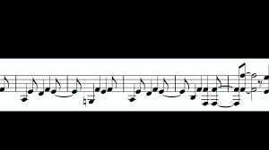

«Ne parlons pas de Bruno» est la meilleure chanson de Disney depuis «Libérée, délivrée»
Cela fait plusieurs semaines que «We Don't Talk About Bruno»,
(«Ne parlons pas de Bruno» en français), chanson extraite du dernier film d'animation de Disney, Encanto,
s'est hissée aux côtés de Lil Nas X et d'Adele en tête des titres les plus diffusés et les plus
vendus aux États-Unis, le Billboard Hot 100, et même des titres les plus écoutés sur Spotify dans le monde.
Véritable défilé de personnages magiques qui se lancent dans un tourbillon de mélodies,
la chanson constitue l'un des moments les plus forts du film. Elle s'achève sur Mirabel,
l'héroïne, qui rassemble les pièces de l'un des mystères au cœur de l'intrigue: quel est donc
le problème avec Bruno?
Lignes musicales
Plusieurs aspects de cette chanson ont contribué à ce qu'elle atteigne un tel succès en quelques semaines
après la sortie d'Encanto: non seulement elle est captivante d'un point de vue narratif, mais musicalement,
c'est un vrai tube. Mélange remarquable de chanson de Broadway et d'influences latino-américaines, elle possède
un rythme très particulier: l'air est accrocheur comme on a fini par l'attendre de tous les morceaux de
Lin-Manuel Miranda, mais les personnages semblent presque toujours éviter de chanter sur le rythme.
La ligne de basse qui se répète tout au long de la chanson se joue aussi constamment de nos attentes: sur les
trente notes qui la composent, il n'y en a que deux qui s'alignent avec le rythme! Ce décalage omniprésent est
précisément la raison pour laquelle nous ne pouvons nous empêcher d'avoir envie de danser en l'entendant:
lorsque la musique se détache du rythme, elle suscite chez nous une impression de mouvement, puisqu'en évitant
de tomber pile là où on l'attendrait, elle titille notre centre de gravité.
La manière dont progresse «Ne parlons pas de Bruno» a aussi son importance.
La chanson voit s'alterner différents couplets, correspondant chacun à une mélodie différente,
chantée par un membre de la famille Madrigal. Mais le fait est que, sans que les auditeurs ne s'en rendent compte,
chacune de ces mélodies a été écrite par Miranda pour aller de pair avec les autres. À la fin de la chanson, dans
un déluge de paroles, tous les personnages se mettent à chanter leur partie personnelle en même temps. Cela produit
un climax musical surprenant et sensationnel, qui n'est pas sans en rappeler d'autres du même genre,
comme dans Les Misérables, West Side Story ou même Sesame Street.
Douloureux silences
Mais la chanson va bien au-delà du simple air dansant et accrocheur. Le film Encanto parle d'une famille
«magique» qui perd ses pouvoirs pour une raison inconnue. En tentant de découvrir cette raison, Mirabel
interroge sa famille au sujet de l'absence de l'un de ses cousins, Bruno, qui a la capacité de prédire l'avenir.
Toutefois, la chanson ne parle pas vraiment de Bruno. Et, de la même manière, le film ne parle pas vraiment
de magie.
Ce dont parle vraiment le film, c'est d'un traumatisme intergénérationnel non résolu
(problème récurrent chez les populations immigrées ayant subi une oppression politique).
La chanson, quant à elle, dévoile les propres frustrations, les failles et les préjugés des personnages.

Par exemple, le premier couplet voit Pepa, la tante de Mirabel, et Félix, son oncle,
reprocher à Bruno d'avoir prédit qu'il pleuvrait à leur mariage. Pourtant, le pouvoir magique de Pepa est
justement de pouvoir contrôler la météo. Le sens sous-jacent de son couplet parle moins de la supposée
malédiction posée par Bruno sur son mariage que de la frustration ressentie par Pepa d'avoir été incapable
de maîtriser son propre pouvoir («tout se mélangea dans ma tête»).
Le moment le plus intéressant de la chanson est peut-être le passage chanté par Dolores, la cousine de Mirabel,
dont les oreilles magiques lui permettent d'entendre tous les mouvements et toutes les conversations à des
kilomètres à la ronde. Cependant, la famille traite Dolores comme un service de messagerie magique,
en lui demandant de rapporter mécaniquement ce qu'elle entend, sans se soucier de ce qu'elle ressent.
Dans «Ne parlons pas de Bruno», le couplet de Dolores résume tout ce qu'elle a entendu et déduit au sujet de
son oncle supposément absent. Dans les dix-neuf secondes durant lesquelles elle chante, elle révèle de façon
plus ou moins détournée qu'elle l'entend encore dans la maison («Je l'entends souvent au loin marmonnant et
murmurant»), qu'il a tenté d'utiliser son don pour aider la famille («mais quel poids pesant que son don humiliant»),
mais que cela en a fait un paria auprès de sa mère et de ses sœurs parce que ses
prophéties ne correspondaient pas à leurs attentes («pour la famille, ses prophéties restaient un mystère»).
Au moment où Dolores lâche ces véritables bombes scénaristiques, elles sont prononcées à la fois trop rapidement
et trop bas pour que l'on puisse pleinement la comprendre. Son couplet est chanté deux fois plus rapidement que
les autres et, surtout, elle chuchote (ce qui contraste fortement avec Pepa, qui chante à pleine voix), ce qui
rend ses mots difficiles, voire impossibles, à comprendre. En étant à la fois trop rapide et trop faible, la
chanson place intelligemment les spectateurs par rapport à Dolores dans la même position que sa famille: elle
tente de nous dire la vérité sur Bruno, mais nous sommes incapables de la comprendre complètement.